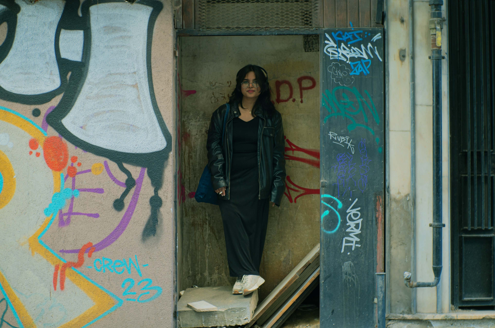
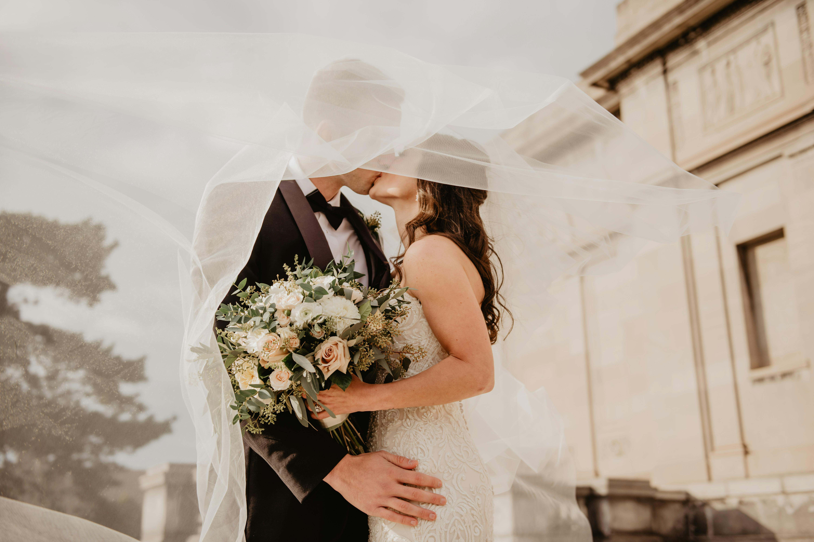
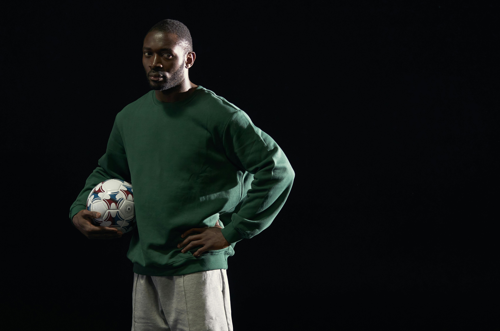
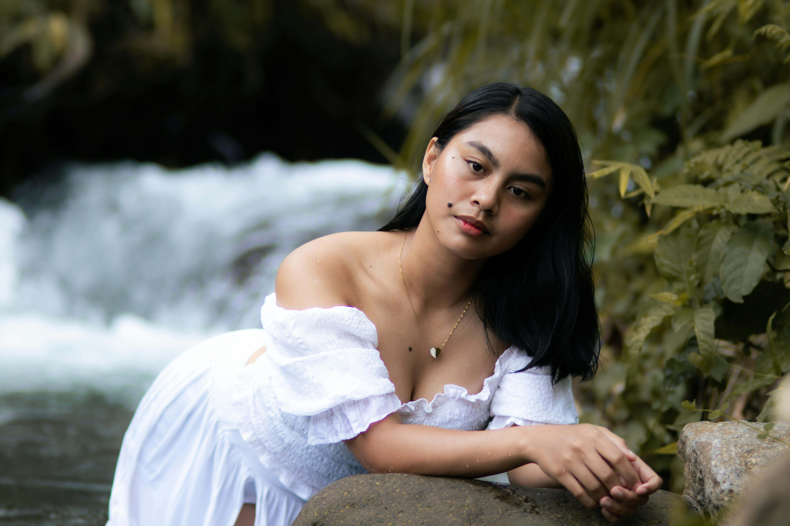
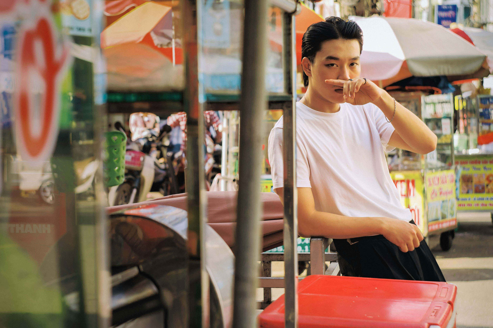

P
ortraits are more than pictures—they are stories captured in a single frame. At BlinkIt, we curate portraits that radiate personality, emotion, and elegance. Whether you need professional headshots, lifestyle imagery, or expressive close-ups, our collection ensures every photo speaks to your vision. Each image is hand-selected for quality and impact, making it easy to find the perfect portrait for branding, campaigns, or creative projects.
Our portrait gallery is designed to inspire and deliver. We prioritize authenticity and style, sourcing images that highlight individuality and human connection. From candid moments to polished compositions, BlinkIt offers a diverse range of curated portraits that fit any purpose—marketing, editorial, or personal use. With BlinkIt, finding portraits that truly resonate becomes effortless, helping you create visuals that leave a lasting impression.

BlinkIt’s wedding portrait collection captures the essence of love, joy, and celebration in every frame. We curate images that reflect authentic emotions, elegant details, and unforgettable moments, ensuring your projects radiate warmth and sophistication. From intimate ceremonies to lavish receptions, our selection offers timeless visuals that speak to the beauty of human connection. Perfect for invitations, branding, or editorial use, these portraits bring romance to life effortlessly.
Our approach focuses on quality and storytelling. Each curated image is chosen for its ability to evoke emotion and complement your creative vision. Whether you’re designing a wedding campaign or crafting a personal keepsake, BlinkIt makes finding the perfect photo simple and inspiring. Because every love story deserves imagery as beautiful as the day itself.

BlinkIt’s studio portrait gallery delivers precision, elegance, and versatility for professional and creative needs. We curate polished images that showcase personality through controlled lighting and refined composition. From classic headshots to artistic poses, our collection ensures clarity and impact, making it ideal for branding, editorial projects, and promotional campaigns. These portraits are designed to convey professionalism while maintaining individuality.
Our curated approach emphasizes detail and style, offering a range of studio shots that adapt to diverse purposes. Whether you need sleek corporate visuals or bold creative expressions, BlinkIt provides images that elevate your brand and message. With us, finding studio portraits that combine sophistication and authenticity becomes effortless—helping you create visuals that truly stand out.

BlinkIt’s nature portrait collection celebrates harmony between people and the natural world. We curate images that blend human presence with breathtaking outdoor settings—lush greenery, serene landscapes, and organic tones that evoke calm and authenticity. These portraits are perfect for lifestyle campaigns, eco-conscious brands, or creative projects seeking a fresh, natural aesthetic. Every photo is selected to inspire and connect with audiences through simplicity and beauty.
Our focus is on authenticity and vibrancy. Each curated image captures individuality in open spaces, creating visuals that feel alive and genuine. Whether you’re telling a story of adventure, sustainability, or personal freedom, BlinkIt ensures your projects reflect the perfect balance between humanity and nature. Because great visuals should feel as real as the world around us.

BlinkIt’s street portrait collection brings raw energy and authenticity to your visuals. We curate images that capture candid moments, urban backdrops, and diverse personalities, offering a dynamic perspective on everyday life. These portraits are ideal for brands, campaigns, or creative projects that value realism and individuality. Each photo tells a story, blending spontaneity with style to create visuals that resonate deeply.
Our curated approach highlights diversity and character, ensuring every image feels bold and impactful. From bustling city streets to quiet corners, BlinkIt provides portraits that reflect culture, movement, and emotion. Whether you’re crafting editorial content or building a brand identity, our street photography selection delivers visuals that connect with audiences on a human level—unfiltered and unforgettable.